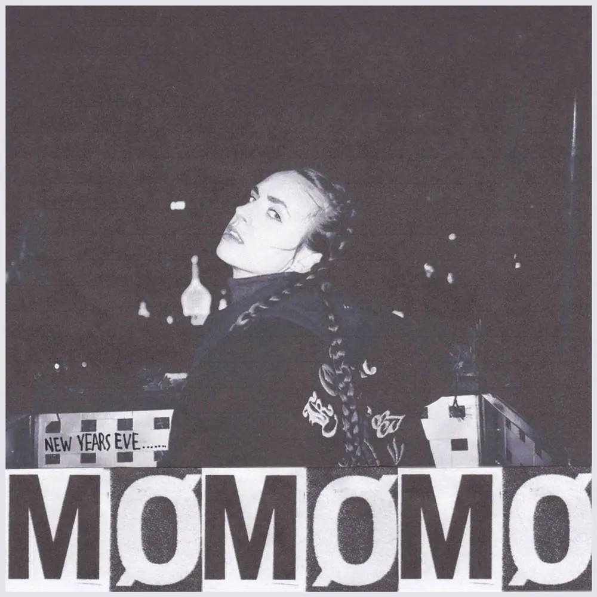

Album#19
New Year's Eve
{kind=link}

专辑信息
- 专辑名称：New Year's Eve
- 歌手：MØ
- 年份：2016-02-05
- 风格：独立流行、另类流行
- 时长：约 7 分钟

最早知道这首歌，是看了 你最美的样子都定格在了电影里，是一些电影女演员的片段剪辑，用 New Year's Eve 作为配乐，剪得蛮好的，也让我记住了这首歌。
New Year's Eve 这首歌在每年的新年夜我都会翻出来听听，有阵子还经常单曲循环，以至于在网易云听歌排行里，它是我听的最多的一首歌。
这首歌的编曲和 MØ 的演唱，既有一种新年夜里烟花一瞬的狂欢感，也有一种狂欢之后的落寞感，还蛮耐听的。
Why do some things stay the same when some don't
We say we'll stay around oh we know we know we won't
I'm a gross teenager trapped in a grown-up shade
Need someone to clean up the mess I made
Say it will be fine
My friend will you fly with me into fire
it's New Year's Eve
We're allowed tonight to pretend we're free
Promise me on New Year's Eve
We forget about our problems
We got time to share all of those things in the New Year
Got a problem, baby let it be, hopped up on my back
Have a happy New Year's Eve
Have a happy New Year's Eve
Why do some things stay the same when some don't
Now we're all queens on the screen happy and torn
There we'll stay young and beautiful
Don't cry please hon
They said in time you'll be fine
My friend come get high with me
Hand in hand it's New Year's Eve
We're allowed tonight to pretend we're free
Promise me on New Year's Eve
We forget about our problems
We got time to share all of those things in the New Year
Got a problem, baby let it be, hopped up on my back
Have a happy New Year's Eve
We forget about our problems
We got time to share all of those things in the New Year
Got a problem, baby let it be, hopped up on my back
Have a happy New Year's Eve
Get so high oh
Help me baby sail away sail away
I'm gonna swim so deep
Oh let it all go
Baby have a happy New Year's Eve
Have a happy New Year's Eve
歌词大意
为什么有些事亘古不变，有些事却面目全非
我们说会留在彼此身边，可彼此都知道这不可能
我只是被阴影笼罩的慌乱的少年
需要有个帮手来收拾这烂摊子
对我说，一切都会好起来
我的朋友，今晚你会和我一起飞蛾扑火吗
在这新年的烟火中
今夜，让我们假装我们还无拘无束
答应我，在这新年夜里
我们会忘掉所有的不愉快
在新年夜，我们有足够的时间促膝长谈
把所有的不愉快都抛在脑后
祝你新年快乐
祝你新年快乐
为什么世事无常，有些事情总没办法永恒
我们衣着光鲜，就像银幕上的女王，快乐又心碎
我们会一直这样美好下去
亲爱的，不要哭泣了吧
人们说，时间会治愈一切
我的朋友，过来与我一起寻欢作乐
手牵着手，在这新年的烟火里
今夜，让我们假装我们还无拘无束
答应我，在这新年夜里
我们会忘掉所有的不愉快
在新年夜，我们有足够的时间促膝长谈
把所有的不愉快都抛在脑后
祝你新年快乐
我们会忘掉所有的不愉快
在新年夜，我们有足够的时间促膝长谈
把所有的不愉快都抛在脑后
祝你新年快乐
多么快乐
来吧，与我一起漂离现实
我要下潜，下潜
放手一切
亲爱的，祝你新年快乐
祝你新年快乐
当你看到这篇文章的时候，大概已经来到 2026 年了。
新年总给人一种重新开始的希望，让人充满期待。既然到了新年，也分享一两首关于希望1的歌吧：
- 🎵 New Boy - 房东的猫 / 陈婧霏
🎵 New Boy - 朴树
歌词
是的我看见到处是阳光
快乐在城市上空飘扬
新世界来得像梦一样
让我暖洋洋
你的老怀表还在转吗
你的旧皮鞋还能穿吗
这儿有一支未来牌香烟
你不想尝尝吗
明天一早
我猜阳光会好
我要把自己打扫
把破旧的全部卖掉
哦这样多好
快来吧奔腾电脑
就让它们代替我来思考
穿新衣吧 剪新发型呀
轻松一下 Windows 98
打扮漂亮
18岁是天堂
我们的生活甜得像糖
穿新衣吧 剪新发型呀
轻松一下 Windows 98
以后的路不再会有痛苦
我们的未来该有多酷
🎵 在希望的田野上 - 朴树
歌词
快些仰起你那苍白的脸吧
快些松开你那紧皱的眉吧
你的生命她不长
不能用她来悲伤
那些坏天气
终于都会过去
人们都是这样地匆忙长大
那些疑问从来没有人回答
就让他们都去吧
随着风远远去吧
让该来的来
我们在这里等待
我们就这么唱 唱 唱 唱
那些东西大妈都不能给你
那些风雨你也别想去逃避
就让他们都去吧
随着风远远去吧
让该来的来
我们在这里等待
我们就这么唱 唱 唱 唱
都会好的
总会有的
那些风雨
还有阴霾
关于未来
就请你坦然
不要离开
不要离开
都会好的
总会有的
祝新年快乐啦！
｡:.ﾟヽ(*´∀`)ﾉﾟ.:｡
新的一年里，健健康康的，就很好了。
脚注:
2025 年的网易云音乐年度报告关键词，也是「希望」